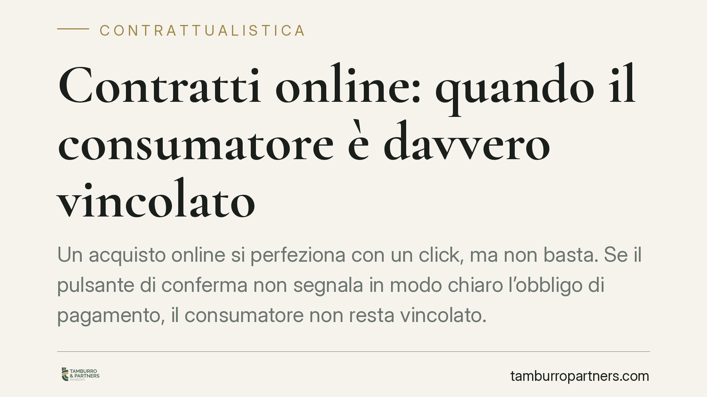

Contratti online: quando il consumatore è davvero vincolato
Un acquisto online si perfeziona con un click, ma non basta. Se il pulsante di conferma non segnala in modo chiaro l'obbligo di pagamento, il consumatore non resta vincolato. È una regola che incide su ogni processo di checkout e che i gestori di e-commerce devono conoscere per evitare contestazioni e ordini annullabili.

Il fatto
La formazione del contratto online tra professionista e consumatore (rapporto cosiddetto B2C, *business to consumer*) segue regole precise. Il punto più delicato è l'ultimo passaggio del checkout: il momento in cui l'utente conferma l'ordine.
La legge impone che il pulsante finale renda esplicito che l'acquisto comporta un pagamento. In assenza di questa indicazione, il consumatore non è obbligato: l'ordine non produce un vincolo contrattuale a suo carico.
Inquadramento normativo
La disciplina si fonda sull'art. 51 del Codice del Consumo (d.lgs. n. 206 del 2005), che regola gli obblighi informativi nei contratti a distanza. Il comma 2 prevede che, quando l'ordine implica un obbligo di pagamento, il professionista deve informare il consumatore in modo chiaro ed evidente immediatamente prima dell'inoltro dell'ordine.
La norma è specifica sul pulsante di conferma: se l'attivazione dell'ordine avviene tramite un tasto o funzione analoga, questo deve riportare in modo leggibile le parole "ordine con obbligo di pagare" o una formulazione equivalente e inequivocabile. La mancata osservanza produce una conseguenza netta: il consumatore non è vincolato dal contratto o dall'ordine.
Si aggiunge il d.lgs. n. 70 del 2003, che recepisce la direttiva sul commercio elettronico e disciplina il momento di conclusione del contratto e gli obblighi informativi del prestatore di servizi online. In questo quadro si è espressa anche la Corte di Giustizia dell'Unione Europea, che ha chiarito la portata dell'obbligo di trasparenza sul pulsante di ordine: la formula usata deve essere in sé sufficiente a far comprendere che si sta assumendo un obbligo di pagamento, senza rinvii ad altre parti della pagina.
Implicazioni pratiche
Per il consumatore la tutela è concreta. Se il tasto di conferma recava diciture generiche come "conferma", "iscriviti", "prosegui" o "registrati", senza segnalare l'onere economico, l'ordine non lo vincola. Può quindi contestare la richiesta di pagamento e ottenere il rimborso di quanto eventualmente addebitato.
Per il *merchant* e per chi gestisce un sito di e-commerce, invece, il rischio è duplice: ordini non esigibili e contestazioni seriali che coinvolgono l'intero flusso di vendita. Un difetto nel testo del pulsante non riguarda un singolo acquisto, ma potenzialmente tutte le transazioni concluse con quella configurazione.
La questione riguarda anche gli abbonamenti e i servizi a rinnovo automatico, dove l'obbligo di pagamento futuro deve emergere con la stessa chiarezza al momento della sottoscrizione.
Cosa fare in concreto
- Verificate il testo del pulsante di conferma: deve contenere "ordine con obbligo di pagare" o una formula equivalente e priva di ambiguità.
- Controllate che l'informazione sull'onere economico compaia immediatamente prima dell'inoltro dell'ordine, non in sezioni separate o note a piè di pagina.
- Per abbonamenti e rinnovi automatici, esplicitate importo, periodicità e durata prima della conferma.
- Conservate la documentazione tecnica del flusso di checkout (screenshot, log, versioni del testo): serve in caso di contestazione.
- Se siete consumatori e avete pagato dopo una conferma poco chiara, raccogliete la prova della schermata e valutate una richiesta formale di rimborso.
Perché conta ora
La vendita online è ormai un canale ordinario e le contestazioni sul checkout sono in aumento. Un intervento di adeguamento sul pulsante di conferma è tecnicamente semplice, ma la sua assenza può rendere inesigibili gli ordini e aprire un contenzioso diffuso. Consigliamo alle imprese di sottoporre il proprio processo di acquisto a una revisione di conformità e ai consumatori di verificare, prima di ogni transazione, che l'obbligo di pagamento sia stato reso esplicito.
Disclaimer
Contributo informativo a cura di Tamburro & Partners - Avv. Giuseppe Tamburro. Non costituisce parere legale.
Ogni contratto ha il suo equilibrio.
Se vuoi una revisione delle clausole o una redazione su misura, scrivi allo studio. Ti rispondiamo entro un giorno lavorativo.